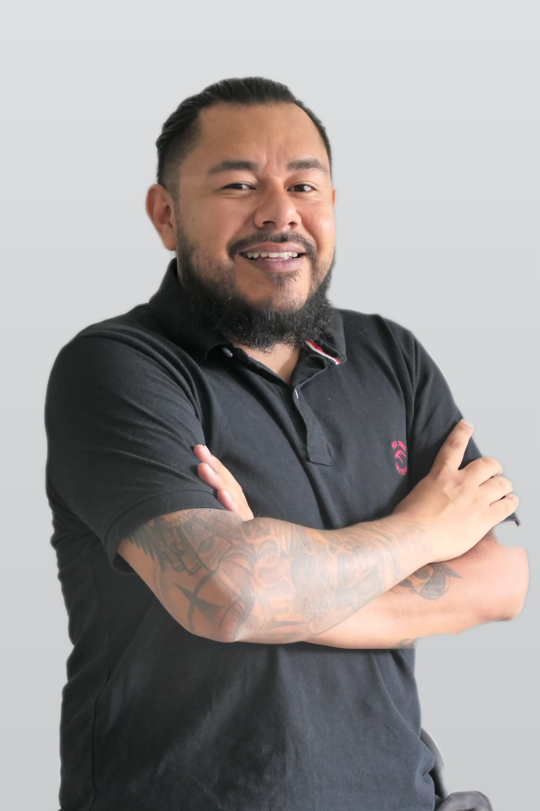

Alberto Hilvert
ICT-Support, zuvor Fachmann Betreuung EFZ
Rund 15 Jahre habe ich Menschen begleitet. Heute betreue ich Systeme, mit derselben Haltung: zuhören, verstehen und Lösungen finden.
Stallikon ZH. Offen für eine neue Stelle im ICT-Support.

Zwei Laufbahnen, die sich überlappen
Seit 2019 habe ich neben der Betreuung auch den IT-Support übernommen. 2025 folgte der Wechsel in die ICT.
Helle Balken zeigen Ausbildung oder Aufgaben neben der Hauptstelle. Der gestrichelte Balken ist der nächste Schritt im ICT-Support.
ICT-Support
- Sep 2025 bis Mär 2026
-
Junior 1st Level Supporter
bexio AG, Rapperswil-Jona
Technischer Support für KMU-Kunden zu Software, Buchhaltung und Auftragsverwaltung. Fehleranalyse per Telefon, E-Mail und Ticketsystem, Anfragen zu Abos und Rechnungsstellung.
- Okt 2025
-
ICT Professional SIZ, Systems & Network
Diplom
Betriebssysteme und ICT-Recht, Benutzerkonten und Backup, Netzwerktechnik und VPN, Serveradministration mit Active Directory und Hyper-V.
- 2019 bis 2025
-
IT-Support neben der Hauptaufgabe
Stadt Zürich
Behebung von Problemen mit PCs, Druckern und Netzwerk, System- und Softwareupdates, Einführung neuer Mitarbeitender in die digitale Infrastruktur.
Betreuung
- Sep 2019 bis Sep 2025
-
Pädagogische Leitung
Stadt Zürich, Schule im Birch
Leitung und Organisation des Hortes, Teamführung, Zusammenarbeit mit Eltern, Lehrpersonen und Fachstellen, Begleitung von Kindern mit besonderem Förderbedarf.
- Aug 2017 bis Aug 2025
-
Berufsbildner Fachmann/-frau Betreuung EFZ
Stadt Zürich
Ausbildung von fünf Lernenden im Bereich Betreuung: Lernziele planen und beurteilen, Entwicklung fördern.
- Jan 2014 bis Aug 2019
-
Fachmann Betreuung EFZ
Verschiedene Einrichtungen, Kanton Zürich
Betreuung von Kindern und Jugendlichen, Freizeitangebote, Zusammenarbeit im Team.
- 2011 bis 2019
-
Lehre und Ausbilderschein
Eidg. Fähigkeitszeugnis 2014, Ausbilderschein 2019
Was ich mitbringe
Technisches Fundament aus der SIZ-Ausbildung und dem Alltag im Support, dazu Erfahrung im Umgang mit Menschen.
Server und Konten
- Active Directory
- Hyper-V
- Backup-Strategien
- Benutzerverwaltung
Netzwerk
- DNS und DHCP
- VLAN
- VPN und Firewall
Arbeitsplatz und Support
- Ticketsysteme
- Microsoft 365
- Google Workspace
- PCs, Drucker, Updates
Aus der Betreuung
- Ruhig bleiben unter Druck
- Gespräche mit Eltern und Fachstellen
- Teams führen und koordinieren
- Verständlich erklären
Eigenes Projekt: Courtside
Eine Web-App für meine Arbeit als Trainer im Jugendbasketball. Ich habe sie mit KI-Unterstützung entwickelt und prüfe und teste jede Änderung selbst, bevor sie live geht.
- Funktionen Taktikboard, Kader, Statistiken, Import von Spielberichten
- Technik JavaScript, Cloudflare (Workers, D1, R2)
- Arbeitsweise KI schlägt vor, ich entscheide und teste
Die Demo läuft mit erfundenen Daten und ohne Login.
Aus Arbeitszeugnissen
Verlässlicher, einfühlsamer Teamplayer, der auch in herausfordernden Momenten ruhig und klar bleibt.
Gewissenhaft, motiviert, offen in der Einarbeitung, höflich und lösungsorientiert in der Kommunikation.
Schreiben Sie mir
Für ein Gespräch oder Fragen zu meinem Werdegang.
alberto.hilvert@hotmail.com- Telefon
- 079 776 83 43
- Wohnort
- Stallikon ZH